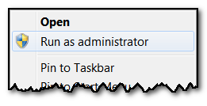
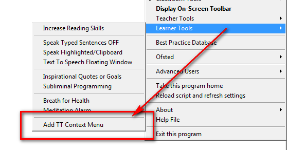
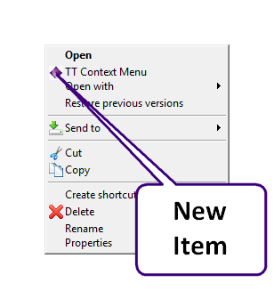
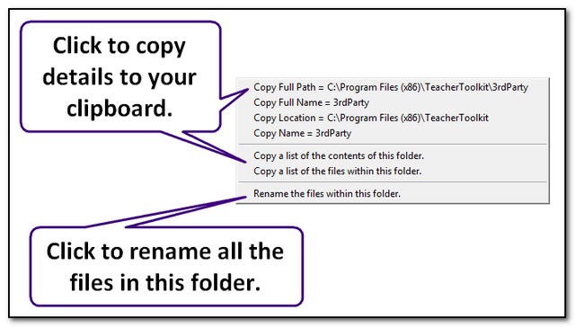
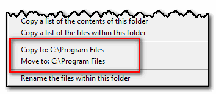
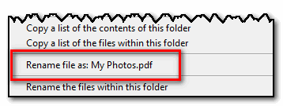
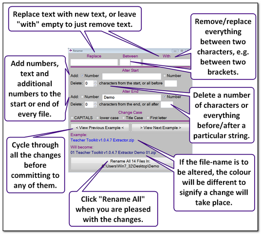

Context Menu
This requires that the Teacher Toolkit has full administration rights and access to write to the computer registry.
You many need to right-click and run the Teacher Toolkit as an administrator to enable this:

It is likely that, within school, these rights are restricted - however, on your home computer you may be able to utilise this feature.
To install it, select "Add TT Context Menu" from the Learner Tools options.

Provided you have access, a new option will now be listed whenever you right-click on a file or folder:

This provides more efficient methods of copying information from the file or folder:

If you have a file location already saved on your clipboard, you will also receive options to copy or move to that location:

If you have simple text saved on your clipboard, you will also receive a option to rename the file using this text:

Or you can select the "Rename the files within this folder" option, which will give you a host of renaming options:
